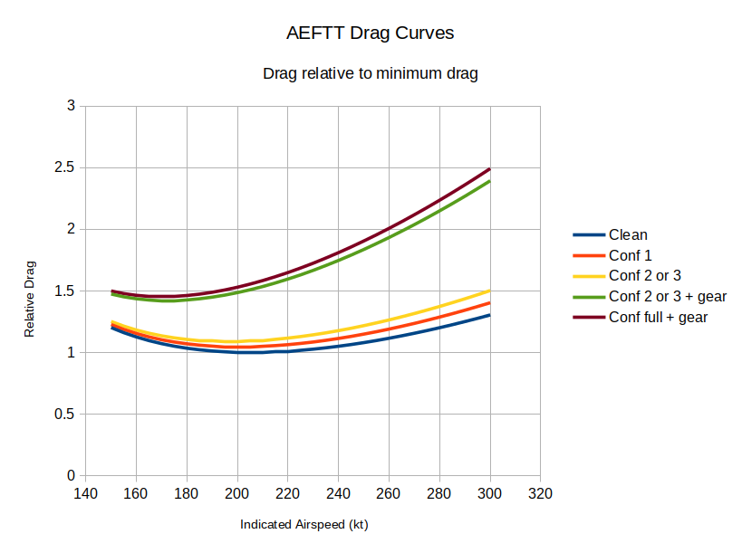
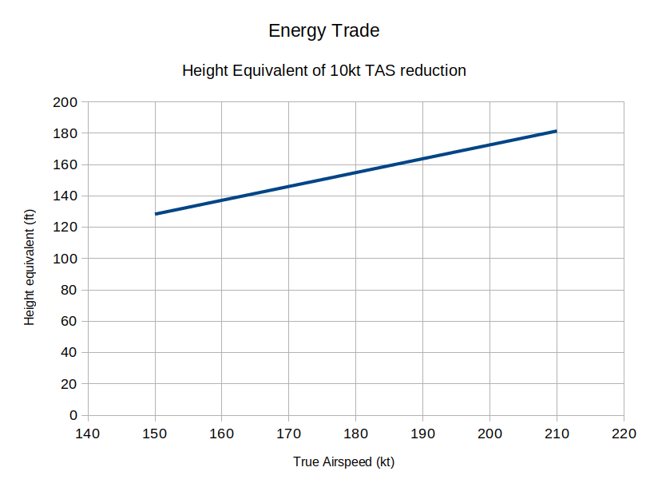

The All Engine Failure Training Tool is a simplified physics and aerodynamics model that has been tuned to replicate the three glide ratios published in the QRH All Engine Failure procedure for a 60 Tonne Airbus A320.
I built it to explore energy management and navigational strategy in the event of All Engine Failure. I have found it useful for this purpose, and release it in the hope that others may also find it useful. Use it entirely at your own risk.
I have no special access to Airbus technical information beyond that which is available to any A320 line pilot. The “Drag Curves” section below describes how aircraft behaviour has been inferred from the small amount of publicly available information. Some of the inferences are a bit of a stretch. It is up to the individual user to decide how useful the resulting simulation is to them.
I strongly recommend that any strategy that you may develop through the use of this simulation is validated in a certified flight simulator.
Gliding flight is all about energy transfer. The aircraft has potential energy by virtue of its position and it has kinetic energy by virtue of its velocity. This energy is continuously being transferred to the environment in the form of work done against drag.
Replication of aircraft behaviour, therefore, is primarily a matter of knowing the drag force. Unfortunately, drag data for commercial aircraft is not made publicly available by manufacturers.
All is not lost, however. The QRH publishes both minimum drag speed for a clean aircraft (a.k.a. green dot speed) and a glide ratio at that speed. With those two data points and some standard aerodynamic equations it is possible to produce a drag curve that should be a good representation of the drag for a clean aircraft throughout the normal flight envelope. Some confidence in the validity of this technique is given by the fact that the glide ratio for windmill relight speed, also available in the QRH, emerges from such modelling without additional effort.
Airbus also publishes a final approach glide ratio at a weight dependent final approach speed. The configuration for this is gear emergency extended, slat 2.
The induced drag coefficient (k in the equation CD = CD0 + kCL2) is mainly a function of aspect ratio, and thus is little changed by slat deployment. If it is considered to be constant, the published glide ratio is solely a result of the increase in form drag coefficient (CD0) associated with gear and slat deployment. A good representation of the drag curve in this configuration can therefore be found by modifying the clean drag curve by increasing CD0 until the published final approach glide ratio is achieved at the specified speed.
Beyond this, things get much sketchier. We need the drag curve for any combination of gear and slat. The first step is to split out the effects of gear and slat 2 from the final approach configuration. In the absence of a better idea, I turned to the fuel penalty factor charts. From these we find flight with gear extended has a fuel penalty factor of 180%, whereas flight with full slat extended has a penalty of 60%. If it is assumed that slat 1 would be 20% penalty and slat 2 would be 40% penalty, it could be claimed that the gear accounts for about 4.5 times the drag of slat 2. From this, admittedly somewhat iffy, process, drag curves for all the available combinations of gear and slat are produced.
Examples of the relative drag curves produced by this process are shown here:
Finally, and most sketchy of all, the contribution of the speedbrake needs to be estimated. The fuel penalty factor is not useful in this case, so I have, somewhat arbitrarily, estimated that the speedbrake, when all the spoilers are available, produces about a third of the drag of the gear. With only a third of the spoilers available, then, the fully deployed speedbrake is estimated to provide just one ninth of the drag of the gear, which is the same as I have estimated for each stage of slat. The FCTM does suggest the use of speedbrakes for forced landing, so it can be inferred that they have at least some useful effect.
Airbus released a Flight Operations Briefing Note titled “Aircraft Energy Management during Approach” in October 2005. There are two interesting details in this briefing note. Firstly, that VLS is slightly on the back of the “power curve” and secondly that the curve near VLS is “rather flat”. Carrying out a landing performance calculation with flaps locked at zero and slat 2 gives a VAPP of 155kt with no approach correction, meaning VLS is approximately 155kt with this configuration. 155kt on the green curve is indeed slightly on the back of the curve and the curve is rather flat there. This gives a modicum of confidence.
An additional issue in all this, of course, is that a real A320 having suffered All Engine Failure may not behave like the QRH says it will:
The glide ratios published in the QRH are suspiciously round numbers. They may represent a very approximate version of the real performance.
Flaps may become available. The ECAM will eventually suggest reinstatement of the yellow hydraulic system with a combination of the APU and the yellow electric pump. This would significantly change the glide ratio in the final approach phase, which, in the QRH, is based on slats only.
It is likely that whatever happened to cause the all engine failure (e.g. multiple bird strike) would have caused other damage to the aircraft which may make the real glide ratios worse than published.
The modelling is, arbitrarily, for a 60 Tonne aircraft. The question arises, then, of how useful is it if the aircraft weight is substantially different from this.
The first thing to note is that, to a reasonable approximation, gliding performance is not dependent on weight. This is what allows Airbus to publish a single value for glide at minimum drag speed and another single value for glide at approach speed. What changes is the value of those speeds, not the glide ratios.
There are areas where the effect of aircraft weight can be felt. The radius of turns will be higher at heavier weights, for example, meaning that the cost of those turns will be higher. The approach speed will be higher at higher weights which means you have less margin to tyre limiting speed should you find yourself high and wanting to transfer some potential energy to kinetic. All in all, though, these effects should be fairly limited, and a strategy that is effective for a 60 Tonne aircraft should be equally effective for other weights.
This section discusses the strategy that I have evolved. I make no claim that it is the best available strategy. I include it only in the hope that the information may be useful, not as a recommendation to adopt the same methods.
Pilots rightly fear undershooting, so tend to “eyeball” an overly steep glide. With the flatness of the drag curve at approach speeds and the limited availability of methods of modifying glide ratio, once you commit to a glide that is significantly wrong there is little that can be done to rectify the situation.
The key is to be on a decent approximation of the “correct” glide-slope, then trade potential and kinetic energy to make micro adjustments.
The starting point for estimating the “correct” glide-slope is the figure from the QRH, i.e. 600ft per nautical mile. Wind has a significant effect, and needs to be accounted for, as does the pseudo-force due to the wind gradient. I use a ballpark of an extra 50ft per nautical mile per 10kt average headwind. You also need to account for whether you have arranged that you will have flaps available. If so, I add another 50ft per nautical mile.
With an estimate of the cost of each nautical mile in feet, it is possible to write down the altitudes versus distances for the glide you are hoping to fly. You start with airfield elevation at 0nm and increment by your estimate for each mile back up the slope.
The approach is split into two phases:
The first phase is initially flown clean at green dot, then slat 1 at s speed. Energy is managed in this phase by manipulating track mileage.
The second phase is along the inbound track, flown gear down, slat 2 (maybe flap 2 also if you have so arranged) and vertical position is primarily managed by trading potential and kinetic energies.
What you are aiming to arrange is for the aircraft to simultaneously meet your calculated glide-slope and complete the transition to gear down, slat 2.
To help achieve this, a target position on the glide-slope is nominated. The focus of the first phase is to be inbound on the extended centre-line, slat 1, s speed, such that the aircraft would meet the glide-slope at the target position. If sufficient energy is available, 5nm seems to work well, but a closer in target may be required if things are tight.
As you approach the glide-slope, you then shift your focus to timing the deployment of gear and slat 2. The reason I refer to the first phase target as soft is that modest errors are easily absorbed at this point. If you got yourself a bit high, you meet the glide-slope a bit earlier, if you got yourself a bit low, a bit later. Obviously, the closer in your target is, the less error you can absorb this way.
The first question to be answered is whether a suitable airfield can be reached. Your still air range at green dot is two and a half times your altitude in thousands of feet, e.g. if you are at 36,000ft your still air range is 2.5 x 36 = 90 nautical miles. It is difficult to properly account for wind as both the wind and your true airspeed will be changing significantly throughout the descent, but tailwinds are obviously to be preferred.
Time spent at windmill relight speeds will significantly reduce your potential still air range. It is not impossible that there could be situations where attempts to windmill relight would leave you unable to reach a satisfactory airfield.
If a suitable airfield can be reached, an estimated glide-slope is created and a first phase target is nominated as described above.
In order to manage track mileage, I have found the simplest method is the use of variable length holding patterns. As a ballpark figure, each 90° turn costs 1000ft. Note that this is conservative at low altitudes and overly optimistic at high altitudes due to the higher true airspeed and thus larger radii of turns as altitude increases. Thus, each 180° turn will cost about 2000ft. The level segments cost 400ft for each nautical mile, as per the QRH. With a suitable selection of level segment length, the target can usually be achieved with an error of less than a few hundred feet.
If there is not sufficient spare energy for holding patterns, another useful technique is adjusting the position of the intercept of the final approach track. If the intercept angle is around 90° and you are a reasonable distance away from it, the distance flown to the start of the inbound turn is not greatly affected by the intercept distance. Bearing in mind that the 90° turn will cost around 1000ft, a suitable intercept distance can be found such that any excess energy is used up.
The second phase is the final glide to a landing. The gear has been emergency extended and cannot be retracted and config 2 is selected.
In the scenario considered by the QRH, only blue hydraulics are available. That means no flaps and only a third of the speedbrake.
In this scenario, selecting config 3 does nothing — the slat position is the same in config 2 and config 3. Selecting config full prevents the use of speedbrake, so, assuming the increase in drag from slat 3 to slat full is similar to that provided by the remaining speedbrake, also gains nothing. That leaves the speedbrake, or the third of it that remains at least, as the only method of achieving a, fairly minimal, increase in glide angle.
Selecting config 1 is a viable method of achieving a slight decrease in glide angle: landing performance calculations show that with flaps stuck at zero, approach speeds are the same for slat 1 to 3 inclusive.
Things are somewhat better if you can reinstate the yellow hydraulics. The ECAM will eventually instruct you to do so, but only once the pressure derived from the windmilling engines drops sufficiently, so it may be worth sorting it out earlier. You will need the APU online, and you will need to turn the PTU off as the yellow electric pump is not sufficiently capable to power the green system through the PTU.
With the yellow hydraulics you get flaps and all the spoilers associated with the speedbrake. This should give significantly more capability for increasing glide angle if required. Once on the ground, it also gives you more ground spoilers and better braking capability.
I have not been able to model behaviour with the yellow hydraulics available as there is no relevant data in the QRH on which to base the drag model. I am keen to offer this as an option in the future; if there is sufficient interest, I will rent a suitable certified fixed based sim in order to extract the drag model for these configurations.
What is highly effective in this phase is direct trading of potential and kinetic energy. This chart attempts to put some figures to such trade-offs:
For example, reducing true airspeed from 180kt to 170kt is equivalent to about a 155ft climb, from 170kt to 160kt about another 145ft. So by reducing speed within a reasonable range we can effectively increase our altitude by about 300ft. For an increase in speed from 180kt to 200kt we can decrease our effective altitude by a little more than that. Note that this is independent of aircraft weight, or, indeed, being an aircraft at all. With this in mind, flying the approach at 15kt or so above the published VAPP provides some useful error margin.
Over 5nm, ±300ft is equivalent to about ±0.56°. That gives us at least some leeway should our estimated glide-slope be slightly out. About ±0.18° is also available from accepting a landing 300m either side of the aiming point; if a particularly long runway is available, moving the aiming point to 600m into the runway would double this.
With this energy trading, it is quite possible that you will arrive at the touchdown zone with significant excess speed. This is far preferable to landing long — wheel brakes are much more effective at dissipating kinetic energy than aerodynamic drag. It is also worth bearing in mind that some excess energy is going to be required to reduce the descent rate to more normal levels just prior to the flare.